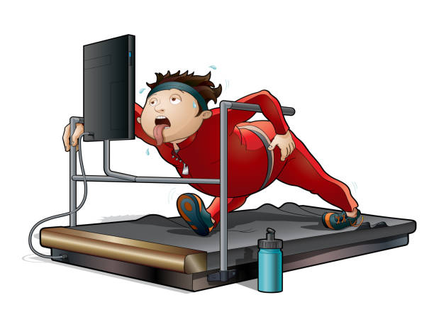

WODs are in class assessments that determine if the student has learned the material taught in class that week, it is graded as a pass or fail format.
On the first day of class, we were told about WODs or Workout of the Days that would happen once a week, to test our comprehension of what we learned from that week of class. The kicker was this: it was timed and each WOD was worth 100 points, and it was pass or fail. I thought alright, study here and there and make sure I know the material, piece of cake. Boy did I have my work cut out for me.
In order to succeed on the WODs, we were instructed to:
If you ask me, this is a lot to ask from one class, given that the average student has at least four other classes they have to take simultaneously. Getting into a routine was a little difficult for me personally. I definitely did not prepare nearly as much as I should have for this first WOD, but to be fair this was also my first time getting used to the schedule of five other classes. I thought I prepared enough. I studied the practice WODs, I attended the TAʻs WOD, and I did all the assignments required of me. All that was apparently not enough.
Walking into class, I was so nervous. I kept thinking it was going to be hard, and I was not going to even finish before the time was up. As the WOD was released to us, I began reading it and thinking wow this did not seem too hard at all. The instructions gave all that was needed, all I had to do was put it in JavaScript language and I would be good. I finished before the time was up and I felt okay about the work I submitted. I understood what I was doing and I did not need assistance on any part. I thought if anything going forward, I would spend a little less time on test running and more time on just double-checking if I closed all of my brackets.
After everyone finished the WOD, we discussed what we did. Some people chose to use a loop and others did not. We saw how both ways worked out and how both had their flaws. It was easier in my eyes to use a for loop for this particular WOD just because that was what I was the most comfortable doing. It was easy for me to see how it counted from 1 to 100 within a loop rather than structuring it without one. I think I would still have done it in a for loop if I had to go back and redo it just because it helped me visualize it better. When discussing other methods, I was a little confused on how it all came together. The review afterward was a wake-up call that I needed to better understand all concepts taught within the week and not just try to perfect my skills in the area I felt most comfortable in.
Walking out of that class, I felt okay. I knew I need to study more, prepare myself better, and not just settle for knowing how to do something. I was hard on myself and studied more afterward to make sure I grasped concepts better and did not just try to get away with doing what was in my comfort zone. I definitely felt that this first WOD was a struggle to learn from. I went in there stressed, got a little to confident doing it, and quickly got humbled during the after conversation. I now realize it is not enough to read or watch videos, listen blindly to lectures, or even just attend WOD practice sessions. While all of these are great, I was not learning. I was only listening. A lot of it is being more open to learning rather than having the mindset of I do not need to know everything to do good. I think I was striving for mediocrity when this class required me to strive for beyond. The discussion our class had after the WOD was complete was important. It highlighted what we did well, while also emphasizing there might have been better, faster, or just other ways in general to approach the issue.
I learned a lot from this first WOD experience. It will be lessons I need to learn from and also some small successes I will keep practicing to keep good habits. Though I still do not totally agree with WODs being pass or fail as it leaves no grey area from a points/grade perspective, I totally get that WODs are similar to real life projects: you either do it successfully or you do not. I hope I only go up from here.